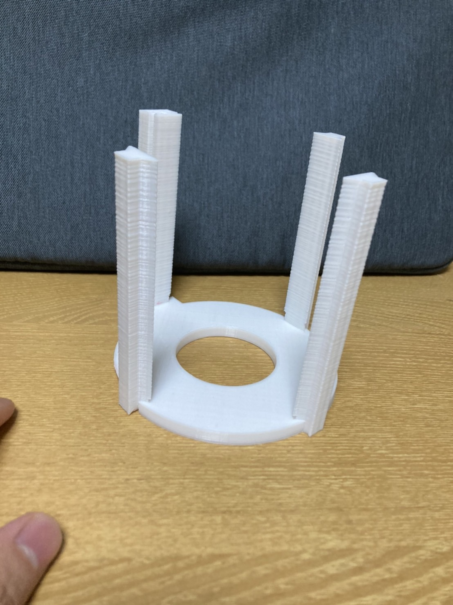
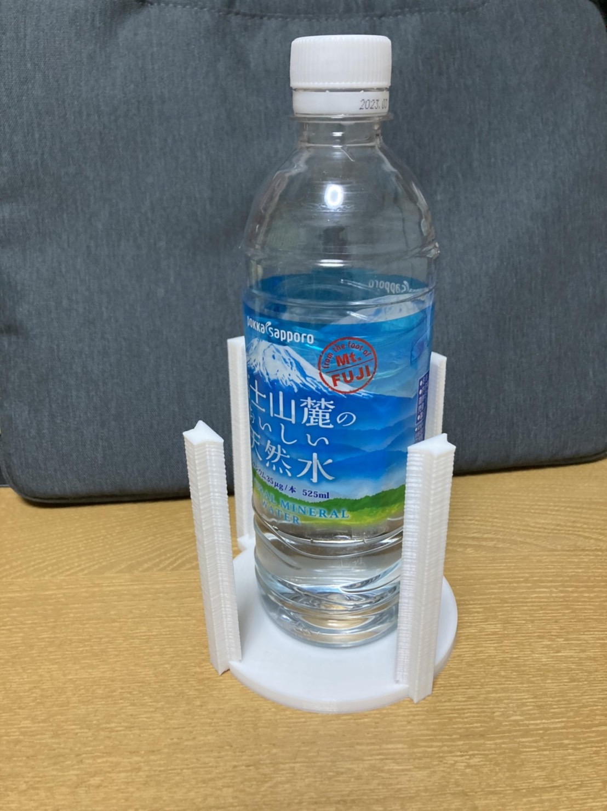
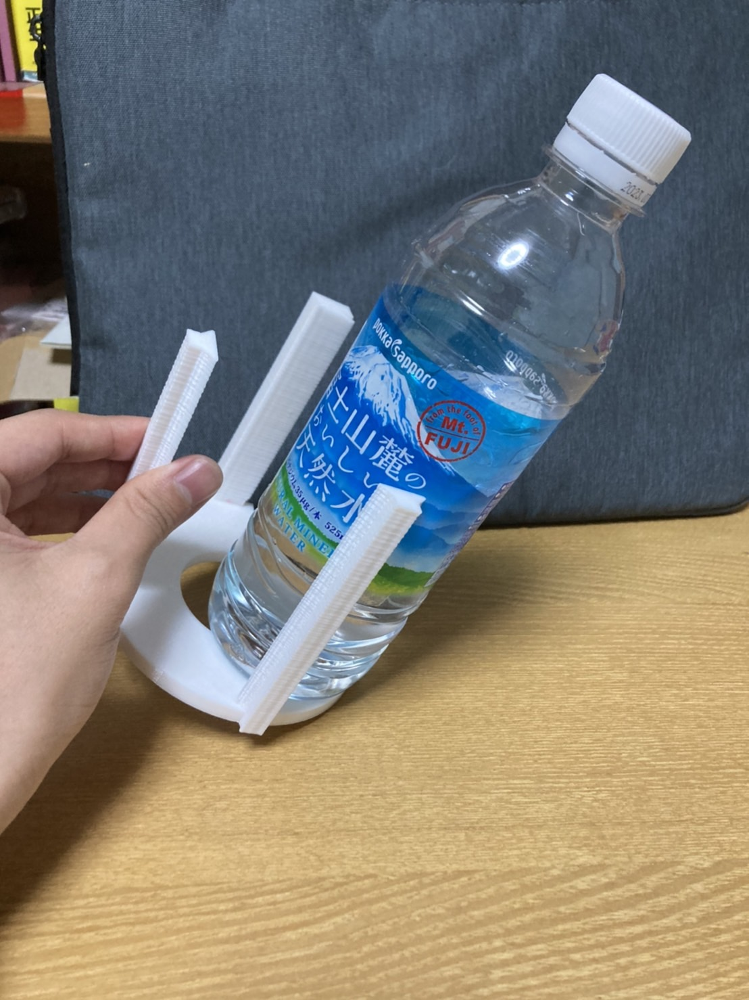

Disign for others
経緯
最初はベビーカーを固定するものをつくろうと思っていたのですが、思っていた以上に難しく、制作に時間がかかりすぎるということで、ベビーカーに有ったら便利なものを作ることになりました。そこで陳さんの編んであった飲み物入れを作ることになりました。
飲み物入れ
作品説明
この作品は一箇所だけ大きな柱があり、そこにマジックテープを付けてベビーカーに固定しようというものです。



失敗点
大きさがデカすぎたことがよく無かった。大きいことでたくさんの大きさに許容できるようにはなったのですが、固定というのができなくなってしまい、不安定になってしまった。
デジタルファブリケーション
XBPトップページ